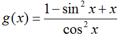
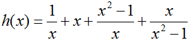

Slant (Oblique) Asymptotes
Depending on whether your calculus class covers this topic or not, you may wish to pass by this mini-section. If you find asymptotes interesting, though...keep on reading! You'll want to start a new worksheet called 05-Slant Asymptotes before you proceed with the rest of this section.
So far, we have looked at the behavior of two types of functions as x approaches positive or negative infinity: those with horizontal asymptotes, and those that oscillate indefinitely. The third type we are going to cover is slant asymptotes. Also known as oblique asymptotes, slant asymptotes are invisible, diagonal lines suggested by a function's curve that approach a certain slope as x approaches positive or negative infinity. The following graph is one such function:
plot((x^2-3*x-4)/(x-2), x, -10, 10, randomize=False, plot_points=101).show(ymin=-20, ymax=20)Toggle Line Numbers
It looks like f(x) starts to approach a certain slope rather than a certain y-value to both sides of the vertical asymptote. As in the last section, this function gives the suggestion of an invisible line separating the top and bottom portions of the graph. In this case, the invisible line is a slant asymptote. The question here is not of which value the function approaches, but of which slope it approaches as x becomes increasingly large or small. To answer this question, let's do a little numerical analysis. Copy, paste, then evaluate the following code.
def f(x):
return (x^2-3*x-4)/(x-2)
for i in [4..100]:
print f(float(i))-f(float(i-1))
Toggle Explanation Toggle Line Numbers
1-2) Define the function f(x) as the rational expression (x2-3*x-4)/(x-2)
4-5) Loop from i equal 4 to i equals 100, printing out the slope between f(i)
and f(i-1) for each value of i. 'float' is so that Sage displays the slope
as a decimal and not as a fraction.
If the above code still seems untowardly foreign...try playing around with it!
In my experience, going hands-on with code is often the best way to understand
what it does.
Based on the code's output, we can see that in the area of x=100, the function's slope is approximately equal to 1. Using Sage's 'limit' function, we can confirm this result:
limit(f(x)-f(x-1), x=oo)Toggle Line Numbers
As expected, the limit of the function's slope as x approaches infinity is 1. A hunch would tell you that the function's slope as x approaches negative infinity is most likely 1 as well, and changing the x=oo to x=-oo verifies that result.
Now that you've done things the hard way, though, I'll tell you a shortcut to find the slope of slant asymptotes for rational functions. For a generalized rational function like this one:
If n is the highest power of the denominator, n+1 is the highest power of the numerator, and a and b are constants, the function will have a horizontal asymptote with a slope equal to a/b. You will find that slant asymptotes only pop up when the numerator of a function is of one higher power than the denominator of a rational function. Where numerical analysis can still come into play, though, in a case where you can't simplify a function to fit this general form.
Practice Problems
1)
 Toggle answer
Toggle answer
2)  Toggle answer
3) Hint: simplify first.  Toggle answer